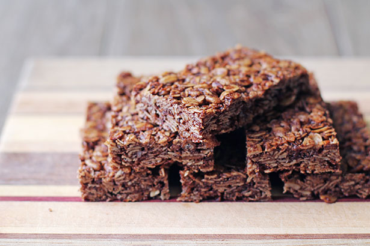

Chocolate Cereal Bars

Description
This isn't really a specific recipe, but rather a simple method that allows you to create customized breakfast bars, energy bars, power bars, sports bars, or whatever you decide to call them.
Pretty much any ready-to-eat breakfast grain or cereal can work here, along with all you favorite nuts, seeds, and dried fruits. No matter what goes in yours, I really do hope you give these a try soon.
Ingredients
- 1 ½ cups rolled oats
- 1 cup puffed brown rice cereal
- ½ cup chopped raw almonds
- ⅓ cup shredded coconut
- 3 tablespoons unsweetened cocoa powder
- 1 teaspoon kosher salt
- tiny pinch cayenne pepper
- ⅓ cup packed brown sugar
- ½ cup maple syrup
- 2 tablespoons vegetable oil
- 1 tablespoon water
Steps
- Preheat the oven to 350 degrees F (175 degrees C). Grease an 8x8 pan with butter and line with parchment paper.
- Combine rolled oats, puffed brown rice cereal, almonds, coconut, cocoa powder, salt, and cayenne in a bowl.
- Combine brown sugar, maple syrup, vegetable oil, and water in a small saucepan and bring to a simmer over medium-high heat. Stir, and let the mixture boil for 1 minute.
- Pour sugar mixture over the dry ingredients in the bowl and mix thoroughly. Transfer to the prepared pan, and smooth out the top, pressing lightly with a spatula.
- Bake in the preheated oven for 25 minutes. While still hot, use a spatula to score the pan into 8 portions. Let cool to room temperature before breaking into bars. You can also not score, and simply let cool, then cut with a knife.